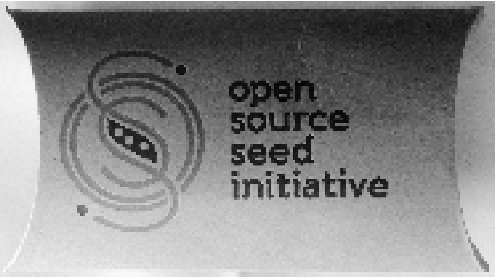

Disruptive Technologies for International Development
Sunday, May 26, 2019

Posterized rendering of photo of Open Source Seed Initiative packaging released under the CC0 Public Domain Dedication.
Introduction
Open science and open data are terms that describe both the practice and products of science that are participatory, inclusive, open for inspection, and available for reuse with none-to-few attached restrictions. The products of open science and open data (and related aspects such as open access and open source) are typically marked with a copyright license that waives all or some of the rights of the copyright holder (usually the creator) thereby making it possible for a downstream user to not just use but also modify the content provided certain conditions are respected. Such a license, and there are many, is usually a variation of the default copyright license, and in fact, depends on the copyright law to enable the copyright holder to waive or convey certain rights in the work. The most popular of such licenses are developed by Creative Commons, a non-profit headquartered in Mountain View, California. One intricacy of copyright law is that it applies only to creative content. Since scientific data are about facts, and facts famously cannot be copyrighted, copyright licenses are inappropriate for science. A more science-suitable legal tool called CC0 Public Domain Dedication was created precisely to handle this peculiarity.
Disruptive Power
The biggest disruption caused by open science and data, along with open access, is to the traditional scientific publishing industry. With low or even no-cost options to publish, in addition to the pay-once use freely forever model enabled by the author processing charges (APC) powered publishing, publishers are having to adapt their business practices that have traditionally monetized access. But the disruption goes beyond just publishing and cuts through the entire academic system that has traditionally used only journal impact factor and the number of published papers as a benchmark for achievement and promotion. The new models are recognizing alternative metrics and rewarding cooperation, participation and contribution. Additionally, proprietary scientific software has traditionally be very expensive precisely because it is so specialized, so it has a smaller and arguably a captive constituency. By moving to more general purpose open source tools such as Java, JavaScript, Perl, Python and R, among others, to construct specialized scientific tools, scientists are able to harness the power of open source.
Potential for Development
Free and easy access to scientific literature, data and tools is necessary for a thriving scientific ecosystem. Many institutions in developing countries, even those at the national level, are unable to afford access to expensive Western journals or software. If they do have access, it is usually to outdated versions. Open source, open access, open science and open data not only allow people in developing countries to use these offerings but also to participate in them by contributing back. This is possible because of the permissive reuse licenses under which the open digital content is published. The vastly bigger user population thus made possible results in greater innovation.
Seventy-five countries around the world have signed on to the Open Government Partnership Declaration since 2011. The declaration, which copies the U.S. framework, calls for governments to commit to “pro-actively provide high-value information, including raw data, in a timely manner, in formats that the public can easily locate, understand and use, and in formats that facilitate reuse.” The power of open government data is that it is not just for civic use. In fact, the use of open government data in scientific projects is of great importance, particularly in fields that directly concern the general public and society.
Caveats
The most important caveat to the use of open science and open data is to pay attention to the quality. While open content promises better quality of results by way of more people being able to look at the underlying source code or data, a move toward new paradigms of review coupled with the more traditional academic pressure to publish can lead to data, tools and literature compromised in quality. Predatory publishers exacerbate the situation by promising exposure to anyone willing to pay their fees without providing any kind of editorial quality control in return. Data bias toward particular race or gender is not particularly specific to open data and science, but is an important danger to guard against. As mentioned earlier, copyright law applies only to creative content. Since scientific data are facts, and facts cannot be copyrighted, copyright licenses are inappropriate for science wherein more suitable legal tools such as the CC0 Public Domain Dedication may be more suitable.
A mission-driven project to help make ‘Open’ the default setting for all global research. All video content is open for re-use.
Tim Berners-Lee: The year open data went worldwide
At TED2009, Tim Berners-Lee called for "raw data now" — for governments, scientists and institutions to make their data openly available on the web. At TED University in 2010, he shows a few of the interesting results when the data gets linked up.
Open Access Explained!
What is open access? An explanation of the world of open access publishing.
Making Malaysia Government Transparent & Accountable with Open Data
Co-founder of Sinar Project: Khairil leads a team of dedicated developers at the non-profit and non-partisan Sinar Project, which uses open source technology and ideas to track and measure corruption. Sinar Project is a collection of related open source projects that comprises open data providers and applications that make information accessible to Malaysian citizens.
The Potential of Open Data
Open data has the potential to change the way we see our ourselves, our world and our future. Open Data NZ is the New Zealand government's open data programme, driving the supply and demand of open government data. Open Data NZ is made up of Stats NZ and the Department of Internal Affairs.
Open Data’s Disruptive Potential
Making data easily accessible can do far more than support transparency; it has the power to transform government. Open innovation expert David Eaves shares his vision for the evolution open data programs.
Providing training and access to standard computing hardware and cloud-based resources can enable scientists in lower-resource institutions and countries to reanalyze published ‘-omics’ data and produce career-enhancing STEM research.
The reasons behind the lack of diversity in genome research are many. But they include a past fraught with abuses by Western scientists. One infamous tale involved Arizona State University researchers, who in the 1990s took DNA samples from members of the Havasupai Tribe in Arizona for a study on diabetes, but later used the samples without the tribe’s consent for studies on schizophrenia and patterns of population mixing and migration. In 2010, the Havasupai won a US$700,000 settlement, and the university was forced to return all the samples it had collected.
(The authors) attempt to show what it is about the open access endeavor that resonates with a feminist theory of law and society… In doing so, (they) discover vital synergies between this branch of feminist legal theory and the open access movement.
eople from minority ethnic backgrounds are set to lose out on medical benefits of genetics research due to an overwhelming bias towards studying white European populations, a leading scientist has warned.